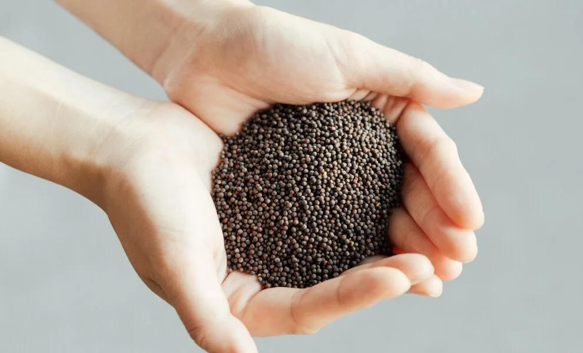
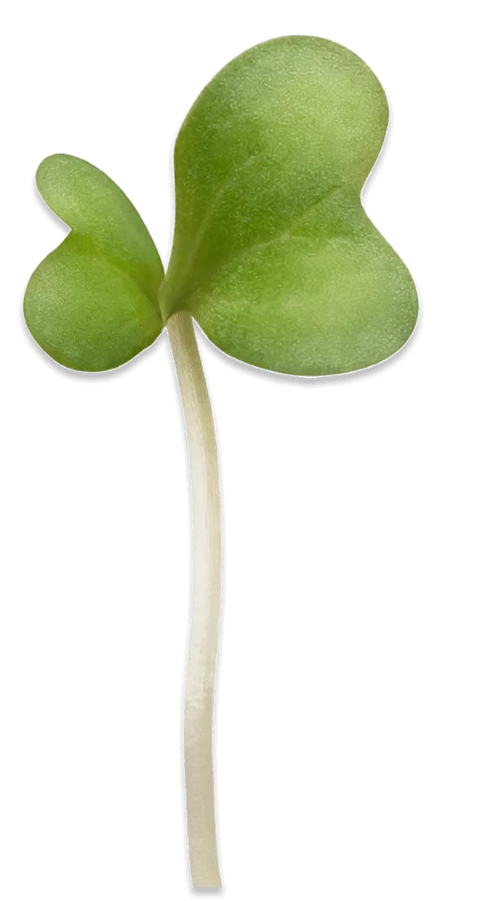
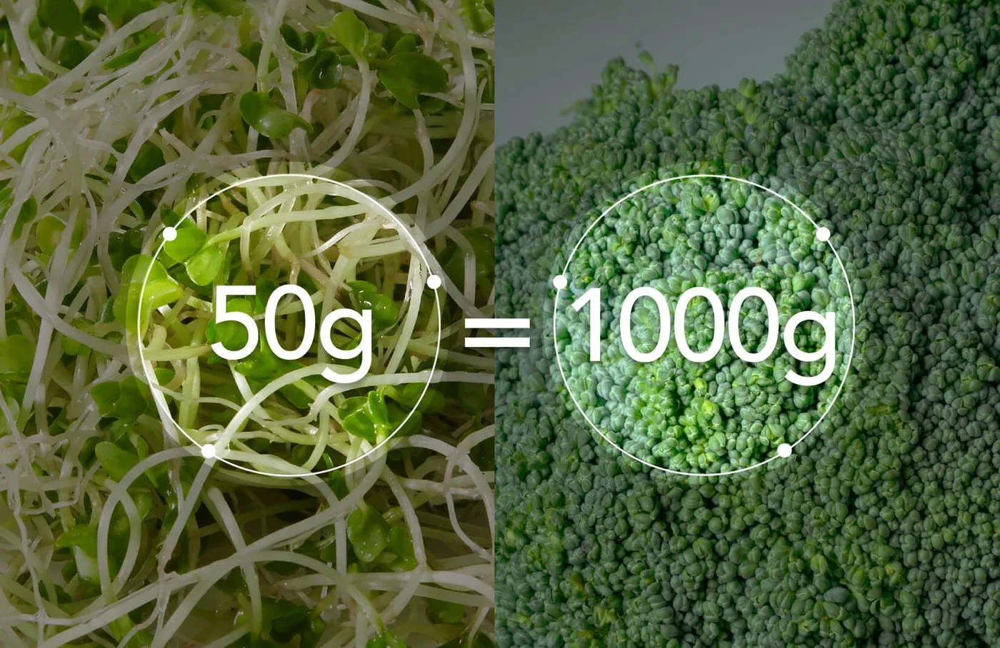
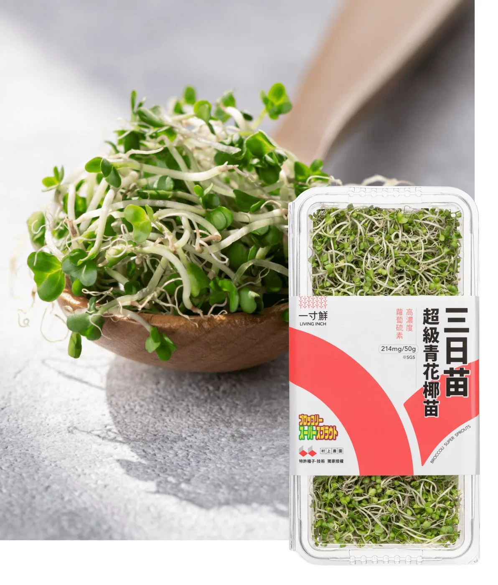
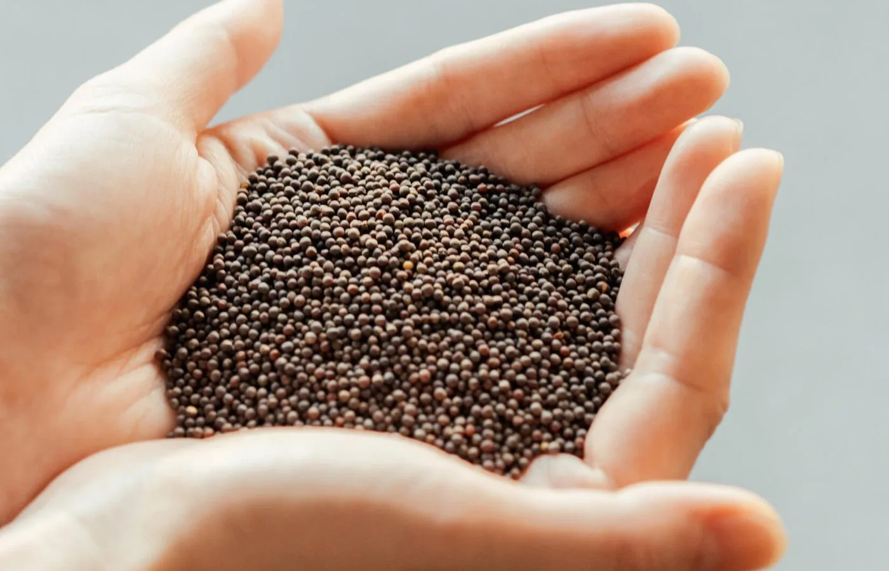
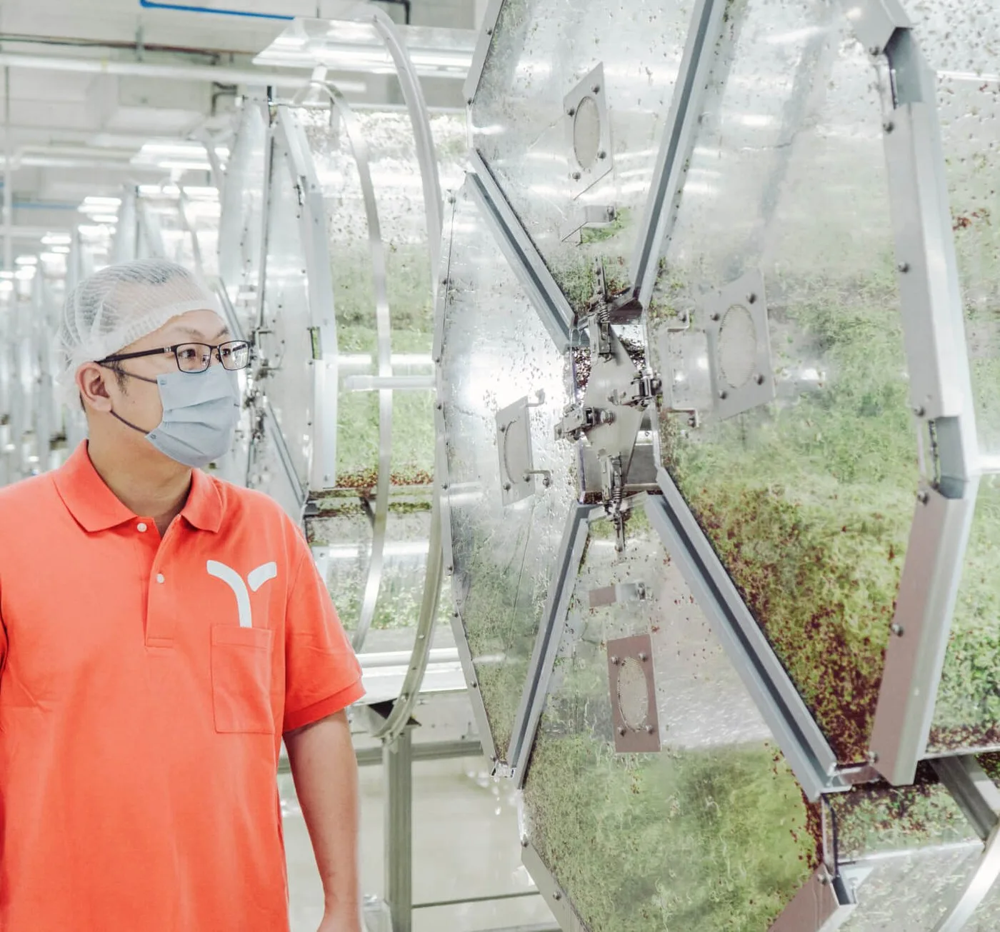
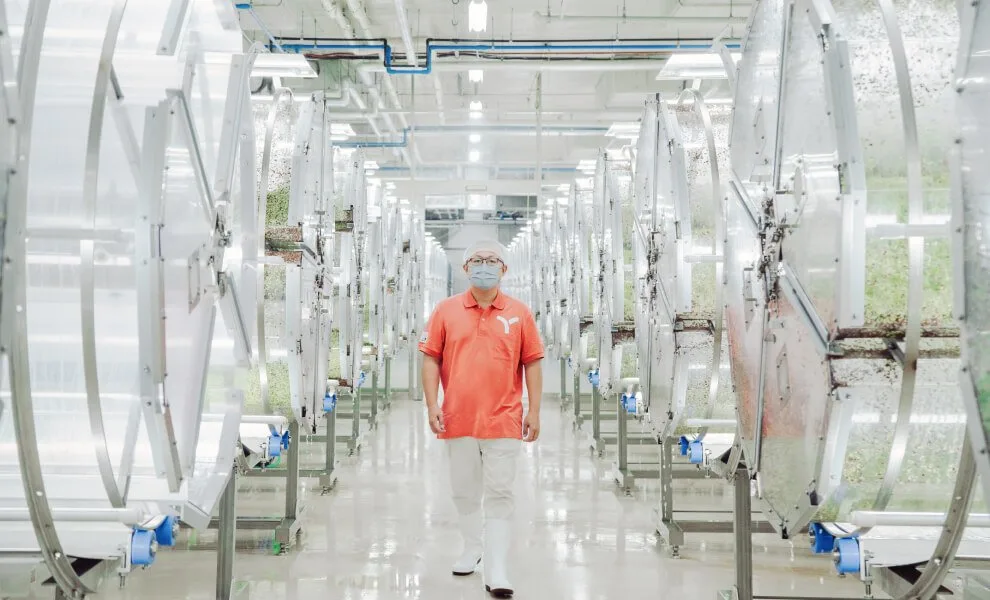
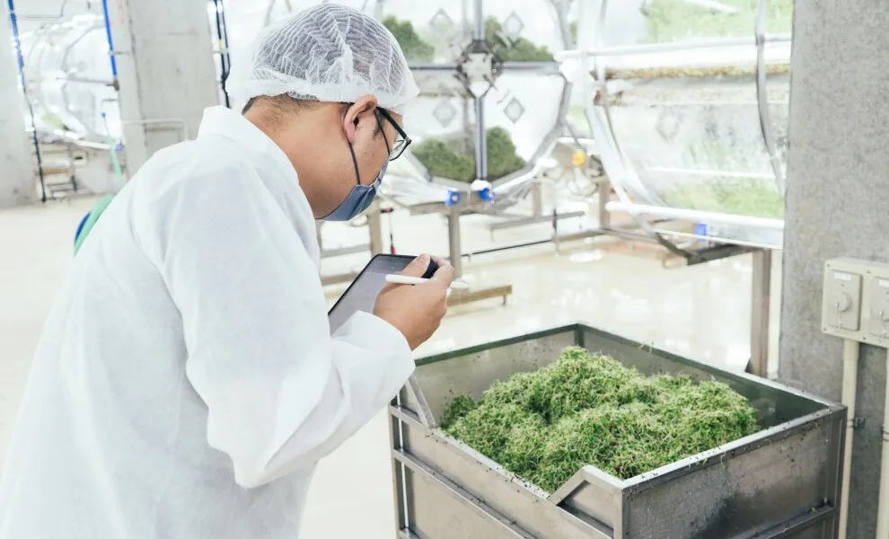
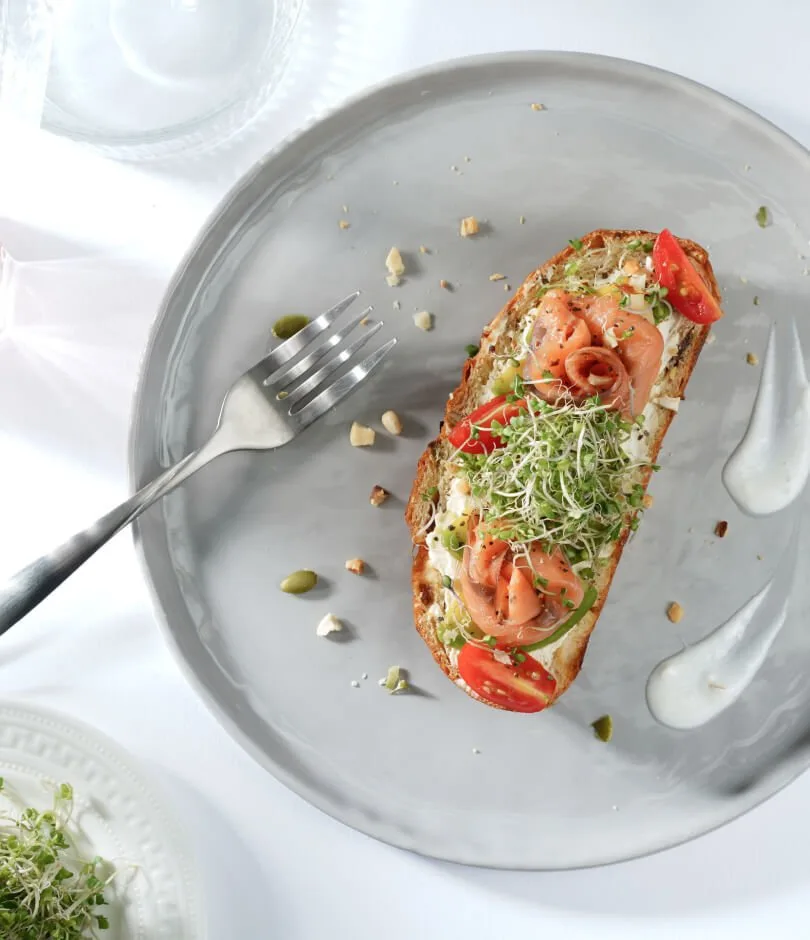
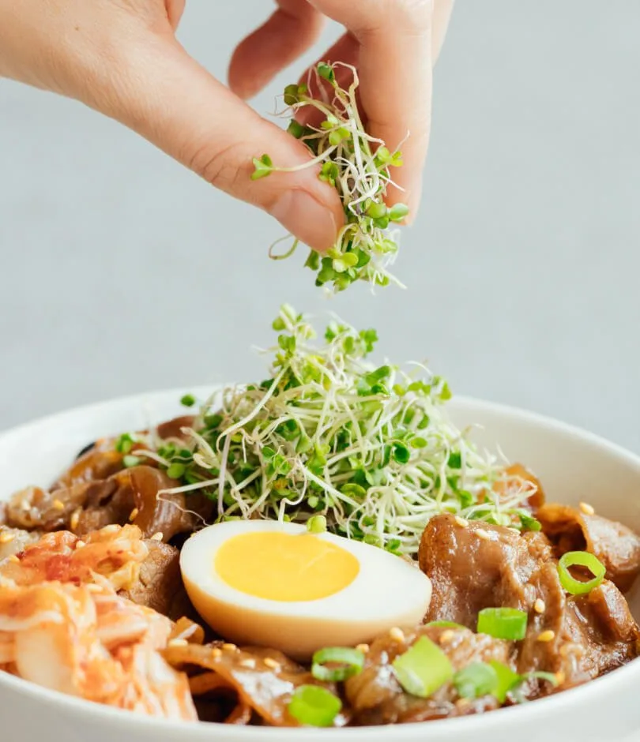

STAGE 1
萌芽蘊育
- 全室內生產，單一換裝入口與人員衛生管控
- 依生長特性控制各區溫度與濕度
- 飲用水水源，經軟化、紫外線殺菌與多道過濾

Hi, I'm a 3-day sprout
三日苗是發芽三天的青花椰苗。美國約翰・霍普金斯大學研究蘿蔔硫素的塔拉雷（Paul Talalay）博士發現，發芽第三天的青花椰苗最營養，這也是「三日苗」名字的由來。
蘿蔔硫素是十字花科蔬菜裡的一種植化素。在日本，三日苗被稱作「超級青花椰苗 Broccoli Super Sprouts」。
50g = 1000g

以 50 克三日苗所含的蘿蔔硫素（SGS）來算，等同吃進一公斤的青花椰成菜。
市面上有那麼多芽苗，蘿蔔苗、苜蓿芽、綠豆芽也都不錯，為什麼我總是強調青花椰苗？因為它真的和其他的不一樣。
思思醫師
Three Reasons

01
由日本村上農園依美國約翰・霍普金斯大學的預防醫學研究開發，含穩定高濃度的蘿蔔硫素，是每日蔬菜的理想選擇。

02
與日本生鮮領導品牌村上農園合作，獲得領先技術與特許種子的獨家授權。透過生產指導與村上實驗室定期檢測，確保每一盒都符合蘿蔔硫素標準：214mg／50g。
蘿蔔硫素主要以 SGS（蘿蔔硫素硫化葡萄糖苷）的狀態存在植物體中，被人體吸收後會轉化為蘿蔔硫素（Sulforaphane）。
03
以純淨過濾水栽培、全室內生長，過程不施加農藥、不用營養液肥。從根到葉完整保留鮮活狀態進行包裝。
Clean Cultivation
「我們把每一盒芽苗，都當是種給自己的父母吃的。」許偉哲，一寸鮮品牌負責人暨育苗人

STAGE 1

STAGE 2

STAGE 3
How to Eat
蛋餅、貝果、三明治、各種肉食、湯品、綠拿鐵，都很適合加一把三日苗。


用飲用水或過濾水簡單沖洗後即可料理。生食可以得到最完整的營養，也可以搭配熟食。
每餐 1/5 盒，就能攝取相當於一顆青花椰菜的高濃度蘿蔔硫素。
理想冷藏溫度約 7 到 9 度。最佳賞味期是包裝日起 7 天，日期印在腰條側面。
Brand Story
三個財金系同學離開金融業，在台大園藝系鄭正勇教授與林碧霞博士的指導下，打造農場、種起活體芽苗。
村上農園改變了日本百萬家庭的飲食習慣。綠藤受邀到日本各地的農場觀摩，從東京、靜岡、廣島到沖繩。
村上清貴社長答應：「我們一起從超級青花椰苗（三日苗）開始吧！」綠藤改建農場、引進特許種子、重新學習種植。
創業 4000 天之後，栽培出心目中理想的答案。
「在芽苗這路上一定會有高低起伏，請堅持下去，相信你們終究會成功。」村上清貴，村上農園社長
FAQ
最佳賞味期為 7 天，以包裝日期算起，日期印在產品腰條側面。吃之前看一下有沒有損壞、枯萎或異味。
一寸鮮建議每週至少吃 1 包（50 克）。蘿蔔硫素的作用可持續 3 天，所以可以每 2 到 3 天吃一次；每天吃也沒有問題。
三日苗出廠時的微黃色是正常嫩葉的顏色，照光後才會逐漸變綠，可以放心吃。如果除了變黃還有損壞、枯萎或異味，就不要吃。
差在蘿蔔硫素的含量。三日苗使用日本村上農園授權的特許種子，可確保蘿蔔硫素達 214mg／50g，是成熟青花椰菜的 20 倍左右。沒有使用特許種子的青花椰苗，比較難保證含量穩定。
一寸鮮是和我合作最久的品牌，透過這個連結購買，我會有收益。青花椰苗也是我在文章裡很常提到的食物。